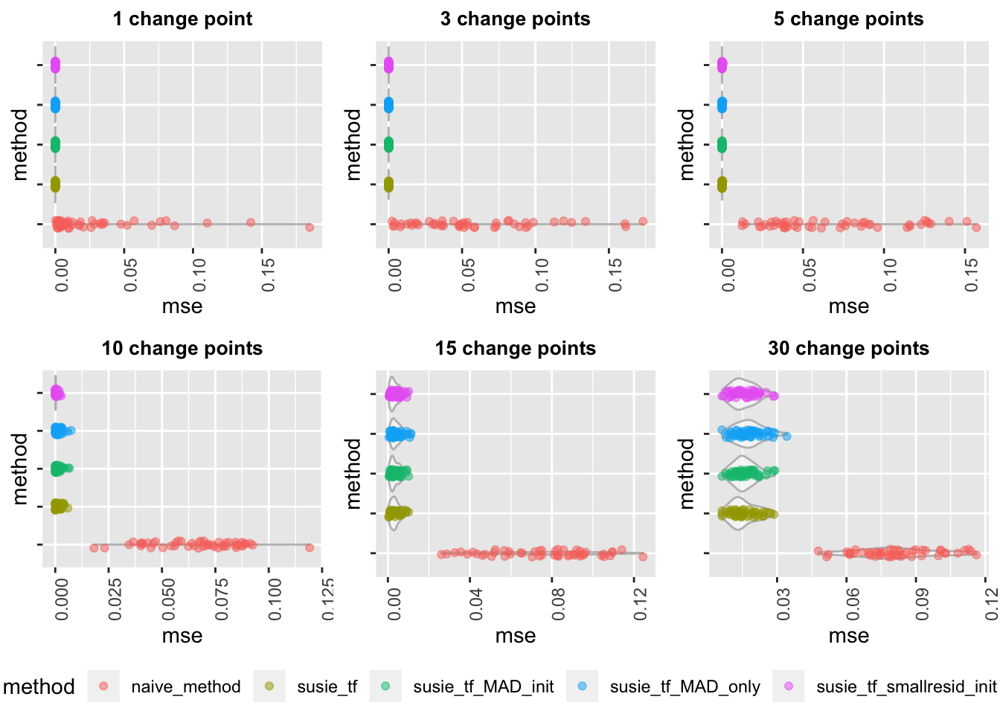

Last updated: 2019-05-09
workflowr checks: (Click a bullet for more information) ✔ R Markdown file: up-to-date
Great! Since the R Markdown file has been committed to the Git repository, you know the exact version of the code that produced these results.
✔ Environment: empty
Great job! The global environment was empty. Objects defined in the global environment can affect the analysis in your R Markdown file in unknown ways. For reproduciblity it’s best to always run the code in an empty environment.
✔ Seed:
set.seed(20190114)
The command set.seed(20190114) was run prior to running the code in the R Markdown file. Setting a seed ensures that any results that rely on randomness, e.g. subsampling or permutations, are reproducible.
✔ Session information: recorded
Great job! Recording the operating system, R version, and package versions is critical for reproducibility.
✔ Repository version: 3098c1a
wflow_publish or wflow_git_commit). workflowr only checks the R Markdown file, but you know if there are other scripts or data files that it depends on. Below is the status of the Git repository when the results were generated:
Ignored files:
Ignored: .DS_Store
Ignored: .Rhistory
Ignored: .Rproj.user/
Ignored: analysis/.DS_Store
Untracked files:
Untracked: analysis/resid.RDS
Untracked: analysis/resid.RDS.zip
Untracked: analysis/wavelet-susie-20190131.Rmd
Untracked: analysis/wavelet-susie-20190224.Rmd
Untracked: analysis/wavelet-susie-20190228-3.Rmd
Untracked: data/dsc_em_output.RDS
Untracked: data/susie-np-dscout.RDS
Untracked: data/susie-np-dscout30.RDS
Untracked: data/susie-tf-dscout.RDS
Untracked: data/susie-tf-dscout2.RDS
Untracked: data/susie-tf-final-dscout.RDS
Untracked: data/susie-tf-general-dscout.RDS
Untracked: docs/figure/wavelet-susie-20190213.Rmd/
Untracked: docs/figure/wavelet-susie-20190224.Rmd/
Untracked: figure/
Unstaged changes:
Modified: analysis/UDWT.Rmd
Deleted: analysis/UDWT2.Rmd
Modified: analysis/dsc-susie-smashr-20190403.Rmd
Modified: analysis/susie-a-20190305.Rmd
Modified: analysis/susie-a-20190307.Rmd
Modified: analysis/susie-np-summary-20190422.Rmd
Modified: analysis/susie-tf-MAD-20190416.Rmd
Modified: analysis/v_methods_comparison_dsc_20190213.Rmd
Modified: analysis/wavelet-susie-20190121.Rmd
Modified: analysis/wavelet-susie-20190130.Rmd
Modified: analysis/wavelet-susie-20190215.Rmd
Modified: analysis/wavelet-susie-20190222-2.Rmd
Modified: analysis/wavelet-susie-20190228.Rmd
| File | Version | Author | Date | Message |
|---|---|---|---|---|
| Rmd | 3098c1a | kaiqian | 2019-05-09 | revised dsc analysis for susie_trendfilter using MAD |
dscout = readRDS("data/susie-tf-final-dscout.RDS")
dscout.df = data.frame(dscout$simulate.n, dscout$simulate.cp_num, dscout$simulate.residual_sd, dscout$analyze, dscout$score.error)
names(dscout.df) = c("n", "cp_num", "residual_sd", "method", "mse")plot_dscout = function(n, residual_sd){
dscout.df1 = dscout.df[dscout.df$n==n & dscout.df$residual_sd==residual_sd,]
dscout.df1.cp1 = dscout.df1[dscout.df1$cp_num==1,]
cp1 = ggplot(aes(y=mse, x=method), data=dscout.df1.cp1) +
geom_violin(alpha=0.5, color="grey") +
geom_jitter(alpha=0.5, aes(color=method), position = position_jitter(width = 0.1)) +
coord_flip() +
ggtitle("1 change point") +
theme(plot.title = element_text(hjust = 0.5, face="bold", size=10), axis.text.x = element_text(angle = 90, hjust = 1), axis.text.y=element_blank())
dscout.df1.cp3 = dscout.df1[dscout.df1$cp_num==3,]
cp3 = ggplot(aes(y=mse, x=method), data=dscout.df1.cp3) +
geom_violin(alpha=0.5, color="grey") +
geom_jitter(alpha=0.5, aes(color=method), position = position_jitter(width = 0.1)) +
coord_flip() +
ggtitle("3 change points") +
theme(plot.title = element_text(hjust = 0.5, face="bold", size=10), axis.text.x = element_text(angle = 90, hjust = 1), axis.text.y=element_blank())
dscout.df1.cp5 = dscout.df1[dscout.df1$cp_num==5,]
cp5 = ggplot(aes(y=mse, x=method), data=dscout.df1.cp5) +
geom_violin(alpha=0.5, color="grey") +
geom_jitter(alpha=0.5, aes(color=method), position = position_jitter(width = 0.1)) +
coord_flip() +
ggtitle("5 change points") +
theme(plot.title = element_text(hjust = 0.5, face="bold", size=10), axis.text.x = element_text(angle = 90, hjust = 1), axis.text.y=element_blank())
dscout.df1.cp10 = dscout.df1[dscout.df1$cp_num==10,]
cp10 = ggplot(aes(y=mse, x=method), data=dscout.df1.cp10) +
geom_violin(alpha=0.5, color="grey") +
geom_jitter(alpha=0.5, aes(color=method), position = position_jitter(width = 0.1)) +
coord_flip() +
ggtitle("10 change points") +
theme(plot.title = element_text(hjust = 0.5, face="bold", size=10), axis.text.x = element_text(angle = 90, hjust = 1), axis.text.y=element_blank())
dscout.df1.cp15 = dscout.df1[dscout.df1$cp_num==15,]
cp15 = ggplot(aes(y=mse, x=method), data=dscout.df1.cp15) +
geom_violin(alpha=0.5, color="grey") +
geom_jitter(alpha=0.5, aes(color=method), position = position_jitter(width = 0.1)) +
coord_flip() +
ggtitle("15 change points") +
theme(plot.title = element_text(hjust = 0.5, face="bold", size=10), axis.text.x = element_text(angle = 90, hjust = 1), axis.text.y=element_blank())
dscout.df1.cp30 = dscout.df1[dscout.df1$cp_num==30,]
cp30 = ggplot(aes(y=mse, x=method), data=dscout.df1.cp30) +
geom_violin(alpha=0.5, color="grey") +
geom_jitter(alpha=0.5, aes(color=method), position = position_jitter(width = 0.1)) +
coord_flip() +
ggtitle("30 change points") +
theme(plot.title = element_text(hjust = 0.5, face="bold", size=10), axis.text.x = element_text(angle = 90, hjust = 1), axis.text.y=element_blank())
ggarrange(cp1, cp3, cp5, cp10, cp15, cp30, ncol=3, nrow=2, common.legend = TRUE, legend="bottom")
}In this vignette, we want to investigate whether it is worthwhile to set MAD estimate as default in susie_trendfilter. Note that since we incline to apply susie_trendfilter in change points problem, we only consider estimating piecewise constant functions here. We performed DSC simulations on estimating various piecewise constant functions and want to compare the following five methods:
naive_method: uses the constant of sample mean as estimated values, i.e., assuming no change points.
susie_tf: uses trendfiltering method implemented in SuSiE, i.e., calls susie_trendfilter directly.
susie_tf_MAD_only: uses MAD method to estimate a residual variance and then fits susie_trendfilter with this estimated residual variance.
susie_tf_MAD_init: uses MAD method to estimate a residual variance, fits susie_trendfilter with this estimated residual variance, initializes from this fit and then fits susie_trendfilter again with the initialization.
susie_tf_smallresid_init: uses a fixed residual variance 0.01 to fit susie_trendfilter first, and then initializes from this fit to perform susie_trendfilter again with this initialization.
We restrict change points values between 0 and 1, and allow for the following variables:
n: the number of data points. We have 100, 300, 500, 1000, or 2000 data points.
cp_num: the number of change points. We have 1, 3, 5, 10, 15, 30 or 50 change points.
residual_sd: residual standard deviation for the ground truth data. We allow for 0.001, 0.01, 0.02, 0.03, 0.05, and 0.1.
More details can also be seen from the DSC script. And how we simulate data can been seen from the R code (function simulate_tf_order0).
Overall, susie_tf_smallresid_init has the best performance.
Difference is not obvious between susie_tf_MAD_only and susie_tf_MAD_init.
The residual standard deviation is in the range of \([0.001, 0.1]\), things might be different if we have larger residual standard deviations in the simulated data.
Given 100 data points and assume residual standard deviation is 0.001.
plot_dscout(n=100, residual_sd=0.001)Given 100 data points and assume residual standard deviation is 0.01.
plot_dscout(n=100, residual_sd=0.01)Given 100 data points and assume residual standard deviation is 0.05.
plot_dscout(n=100, residual_sd=0.05)Given 100 data points and assume residual standard deviation is 0.1.
plot_dscout(n=100, residual_sd=0.1)Given 1000 data points and assume residual standard deviation is 0.001.
plot_dscout(n=1000, residual_sd=0.001)Given 1000 data points and assume residual standard deviation is 0.01.
plot_dscout(n=1000, residual_sd=0.01)Given 1000 data points and assume residual standard deviation is 0.05.
plot_dscout(n=1000, residual_sd=0.05)
Given 1000 data points and assume residual standard deviation is 0.1.
plot_dscout(n=1000, residual_sd=0.1)sessionInfo()R version 3.4.4 (2018-03-15)
Platform: x86_64-apple-darwin15.6.0 (64-bit)
Running under: macOS 10.14.4
Matrix products: default
BLAS: /Library/Frameworks/R.framework/Versions/3.4/Resources/lib/libRblas.0.dylib
LAPACK: /Library/Frameworks/R.framework/Versions/3.4/Resources/lib/libRlapack.dylib
locale:
[1] en_US.UTF-8/en_US.UTF-8/en_US.UTF-8/C/en_US.UTF-8/en_US.UTF-8
attached base packages:
[1] stats graphics grDevices utils datasets methods base
other attached packages:
[1] ggpubr_0.2 magrittr_1.5 gridExtra_2.3 ggplot2_3.0.0
loaded via a namespace (and not attached):
[1] Rcpp_0.12.18 compiler_3.4.4 pillar_1.3.0
[4] git2r_0.23.0 plyr_1.8.4 workflowr_1.1.1
[7] bindr_0.1.1 R.methodsS3_1.7.1 R.utils_2.6.0
[10] tools_3.4.4 digest_0.6.15 evaluate_0.11
[13] tibble_1.4.2 gtable_0.2.0 pkgconfig_2.0.1
[16] rlang_0.2.1 yaml_2.2.0 bindrcpp_0.2.2
[19] withr_2.1.2 stringr_1.3.1 dplyr_0.7.6
[22] knitr_1.20 cowplot_0.9.3 rprojroot_1.3-2
[25] grid_3.4.4 tidyselect_0.2.4 glue_1.3.0
[28] R6_2.2.2 rmarkdown_1.10 purrr_0.2.5
[31] whisker_0.3-2 backports_1.1.2 scales_0.5.0
[34] htmltools_0.3.6 assertthat_0.2.0 colorspace_1.3-2
[37] labeling_0.3 stringi_1.2.4 lazyeval_0.2.1
[40] munsell_0.5.0 crayon_1.3.4 R.oo_1.22.0 This reproducible R Markdown analysis was created with workflowr 1.1.1